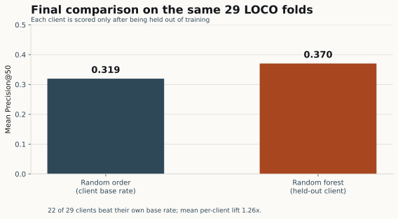
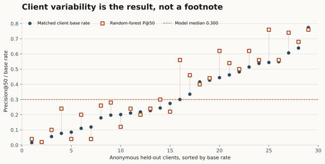

01 · Introduction
The scarce resource is an editor's attention
A content team cannot inspect every page every week. The operational question is narrower: which pages should enter a limited human review queue first?
One analysis row represents one pseudonymized content item. The model produces a score used for ranking; an editor decides whether to diagnose, defer, monitor, or propose an edit. This is a ranking problem implemented with a classifier, not an attempt to assign an unquestionable yes/no verdict to each page.
Precision@50 is the primary metric because reviewer capacity is the constraint. A false positive consumes recoverable review time. A false negative can leave a genuine decline unseen until the next cycle. The model should therefore concentrate observed declines near the top without being allowed to diagnose a cause or make a publishing decision.
Research question. Can four prior-window search signals rank the fifty pages most worth reviewing more effectively than random ordering for a client the model has not seen?
The project began with a stronger comparison against a “stale and visible” hand rule. The validation audit changed the story: the freshness input was not available at the analysis boundary for most rows, so the final defensible baseline is random ordering at each held-out client's observed decline rate. The old rule appears below only as an audit-trail result.
02 · Data
A 78.8M-row release, a 120,507-page analysis
The source is the fixed, pseudonymized build flyrank_pseudonymized_warehouse_release_v20260703, exported 3 July 2026.
| Table | Release rows | Grain | Use here |
|---|---|---|---|
fact_content_daily_performance | 78,835,655 | date × client × content | Primary features and outcome windows |
dim_content | 519,606 | content item | Freshness audit; final freshness feature excluded |
fact_content_query_90d | 2,414,248 | client × content × query hash | Timing audit; final query features excluded |
dim_clients | 104 | client | History-coverage context; never a model feature |
The warehouse daily fact spans 27 January 2025–30 June 2026, but this study queried selected January–March 2026 partitions. In the saved March frame, features cover 1 February–1 March 2026 and the outcome covers 2–31 March; the earlier frame uses 1–29 January for features and 30 January–28 February for its outcome. The legacy _prev30 name describes the intended role, but the available prior window contains 29 calendar dates while the outcome contains 30. The March frame contains 120,507 content items with at least ten prior-window impressions; 120,458 have all four final features.
| Stage | Rows / clients | Reason |
|---|---|---|
| March page aggregate | 120,507 pages | At least ten prior-window impressions |
| Final complete model frame | 120,458 pages / 42 clients | Complete on four decision-time features |
| LOCO-scoreable clients | 29 | At least 50 rows and both outcome classes |
| Reported but not scored | 13 clients | Too small or single-class for Precision@50 |
Public-safety exclusions
The release excludes real client names, domains, raw URLs, titles, keywords, raw queries, and reversal keys. Pseudonymous client IDs are used only to form validation groups; no pseudonymous row ID appears on this page. Outcome-window values, product scores, and post-window fields are also excluded from model inputs.
03 · Methodology
Make the split answer the real question
Label and assumptions
The observed proxy is:
is_declining = imp_last30 < 0.8 × imp_prev30
A positive page lost more than 20% of impressions from the prior window to the outcome window, after requiring at least ten prior-window impressions. This is a review-worthiness proxy, not a diagnosis of content quality. Precision@50 assumes a fifty-page review capacity and values correct early ranking over complete recall.
Final feature set
imp_prev30Prior-window GSC impressionsclk_prev30Prior-window GSC clickspos_prev30Mean position on days with impressionsdays_active_prev30Prior-window days with impressionsA 300-tree random forest with random_state=42 converts these features to a review score. Client and content hashes, the outcome numerator, label, product outputs, update age, and fixed-window query shares are not features.
Baseline and validation design
The final null baseline is random ordering within the held-out client. Its expected Precision@50 equals that same client's observed positive rate, so model and baseline share every fold and denominator.
The headline uses leave-one-client-out validation: train on every client except one, score the unseen client, repeat. Clients with fewer than 50 rows or one outcome class remain in the reported panel but do not receive a P@50. A seven-seed grouped sweep (0, 1, 7, 13, 42, 99, 2024) measures sensitivity to the client draw. A February→March check adds temporal ordering, but it used the legacy query-filtered population and is presented as secondary stress evidence.
Leakage checks
| Check | Observed evidence | Decision |
|---|---|---|
| Label-derived positive control | Adding imp_last30 produced P@50 = 1.000 | Harness detects obvious leakage; outcome stays evaluation-only |
| Feature timing | days_since_update was negative for 65,211 of 81,446 modeled rows (80.1%) | Drop freshness from the model |
| Query-window timing | rare_share and anon_share describe a fixed window after the March outcome | Drop both query features |
| Population selection | 39,061 query-absent rows were dropped; their decline rate was 0.505 versus 0.174 among kept rows | Remove the post-window survival filter |
04 · Results
The honest gain is positive, modest, and uneven
On the same 29 held-out-client folds, model Precision@50 averaged 0.370 and the matched client base rates averaged 0.319.


Why the original headline was retired
| Method | Precision@50 | Status |
|---|---|---|
| Random ordering (test base rate) | 0.161 | Same 21,610-row, nine-client test split |
| Hand-written stale + visible rule | 0.100 | Retired after timestamp audit |
| Logistic regression | 0.260 | Exploratory seven-feature frame |
| Random forest | 0.520 | One client draw; not the headline |
Changing only the grouped split seed moved the random forest from 0.280 to 0.580 (mean 0.489 across seven seeds). The single 0.520 result was therefore one draw of clients, not a stable estimate.
Secondary time check
Training on an earlier frame and scoring March produced P@50 = 0.260 against a 0.174 base rate with the four-feature model; restricting the March test to unseen clients averaged 0.171. This check used the legacy query-filtered population later rejected by the audit. It is evidence about fragility, not the final forward-time estimate. A future unfiltered temporal holdout is still required.
Error analysis
A retrospective, unfiltered top-50 queue contained 28 true declines and 22 false positives (P@50 = 0.560 versus a 0.281 population base rate). The five largest declines missed in the bottom half had median prior-window impressions of 117,869, compared with 112.5 among surfaced true positives. Volume was available and the model still missed high-impact pages—exactly why a low rank cannot override a known business-critical page.
05 · Limitations
What this study cannot support
- One short, unbalanced panel. Results come from selected January–March 2026 partitions and do not establish seasonality or long-run stability.
- A threshold proxy. A 20% impression drop is practical, but pages just above and below it may be operationally similar.
- Unequal saved window lengths. The selected-partition SQL gives the prior frame 29 available dates and the outcome 30, despite the legacy
_prev30name. This may slightly affect the label and should be corrected in a rerun that includes the missing boundary date. - Uneven generalization. Seven of 29 scoreable clients did not beat their base rate; 13 clients could not be scored under the minimum.
- Incomplete temporal evidence. The saved forward-time check retained a later-discovered query-availability population filter.
- No causal effect. No refresh actions were randomized, so this work cannot claim that editing a flagged page causes recovery.
- No semantic diagnosis. The public release contains pseudonymized metrics, not page text, live SERPs, brand constraints, or private queries.
- No calibrated business value. Action weights and planning minutes organize review capacity; they are not revenue forecasts or treatment effects.
The claim I will defend
This random forest sometimes concentrated observed declines in a fifty-page human review queue better than random ordering for held-out clients in this panel. It does not predict Google's algorithm, promise recovery, authorize an edit, or guarantee performance on a new or small client.
06 · Ranked recommendations
Score first; diagnose second; act only after review
The score selects what a person inspects. It never selects what gets published.
The Week-7 action layer consumes the model review score available in the locally regenerated queue interface and combines it with a within-client opportunity proxy (30%) and evidence quality (20%); the model score receives 50%. These are planning weights, not fitted causal values. The queue is ranked within each client because scores are not calibrated for cross-client comparison, and the Week-6 validation metrics do not transfer to this heuristic re-rank.
Executed action-interface scope. The local pipeline regenerated 30,000 pseudonymous rows across 32 clients: 158 review_now, 310 review_next, and 29,532 monitor_later. These counts describe the action input, not model-validation performance, and the row-level CSV remains out of Git.
- Diagnose decline-risk pages. Check tracking, indexation, seasonality, intent shifts, competitors, and cannibalization before proposing an edit.
model_ranked_candidatemodel_decline_risk - Protect visible winners. Visibility raises the cost of an unnecessary change; diagnose before touching a page-one result.
visible_demandpage_one_to_protect - Review snippet and intent for CTR opportunities. Compare query intent and the live SERP; low aggregate CTR alone does not prove a title problem.
low_ctr_visible_page - Review content experience for engagement gaps. Verify analytics coverage, structure, intent fit, and page experience before attributing the signal to content.
weak_engagement_signal - Refresh only after verifying decay. Staleness alone is not permission to edit. Confirm the timestamp, factual decay, and intent drift manually.
verified_stalenessvisible_demand - Monitor thin or limited-signal pages. Never add words merely to hit a count; collect evidence when the signal is too weak.
thin_content_signallimited_evidence
The decay / refresh finding
The original staleness assumption did not survive measurement. The update-derived feature was negative for 80.1% of modeled rows at the analysis anchor, meaning the stored update happened after the period the model was supposed to know. Consequently, freshness is removed from model ranking and appears only as a manually verified action clue. This study does not establish that older pages decay more or that refreshing them recovers traffic.
Cost / value thinking
The action layer assigns five to thirty-five assumed minutes by archetype to turn a review band into a capacity estimate. In this run, the 158 review_now rows total 2,980 assumed minutes (about 49.7 hours). That estimate is for staffing a review cycle only. No expected traffic or revenue uplift is calculated because the study has no treatment-effect data. High-visibility winners receive protective review because the downside of an unnecessary edit is greater; limited-signal pages are deferred because acting on noise spends time without evidence.
Permitted automation
- Score and rank pseudonymous rows within a client
- Attach transparent reason codes
- Calculate review bands and assumed workload
- Record reviewer accept / defer / reject feedback
Never automate from this study
- Rewrite or publish content
- Redirect, delete, canonicalize, or no-index
- Diagnose a cause or promise recovery
- Compare raw scores across clients
- Promote a new/small client beyond shadow mode
- Retrain, change thresholds, or deploy
Light monitoring and retrain triggers
| Check | Trigger | Human response |
|---|---|---|
| Data contract | Any violation | Stop and repair |
| Missingness shift | >5 percentage-point increase | Inspect extraction and tracking |
| Score / action drift | PSI >0.20 or action-share shift >0.20 | Audit data mix, windows, and mapping |
| Matured outcome quality | Client P@50 ≤ own base rate for two windows | Pause that ranking and compare with baseline |
| Reviewer override | >40% same-reason rejection for two cycles | Review reason and action mapping |
| New / small client | <50 mature rows or one class | Keep in shadow mode |
07 · Reproducibility
The receipts are part of the result
The repository contains the framing, extraction logic, model, validation audit, action playbook, capstone notebook, aggregate receipts, and paper source.
From a fresh clone:
python -m pip install -r requirements.txt
python scripts/run_all.py
jupyter labThen run w06_validation_audit.ipynb, w07_action_playbook.ipynb, and capstone.ipynb top to bottom. Full-warehouse reproduction requires approved Hugging Face access and a local hf-token.txt as documented in SETUP.md; that token must never be committed.
The random forest uses 300 trees and random_state=42. Grouped sensitivity seeds are 0, 1, 7, 13, 42, 99, 2024. Row-level queue CSVs stay ignored and regenerate locally; committed JSON receipts preserve aggregate claims without publishing private context.
08 · Acknowledgments & data credit
Data credit
Built on the FlyRank ML Internship dataset. I also acknowledge the internship's research and data-safety framework, which made the pseudonymized release and its documentation available for this study.